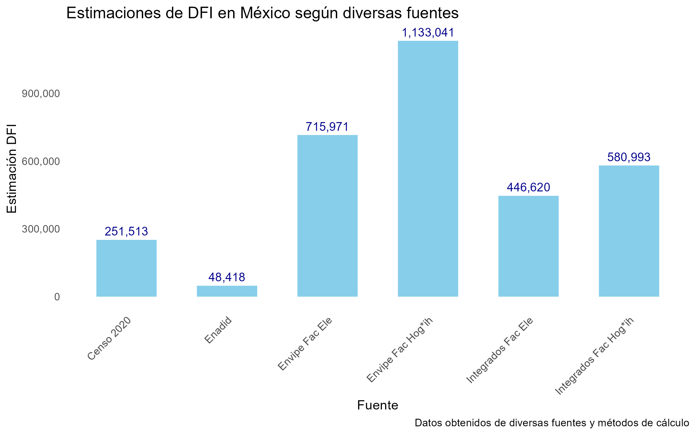
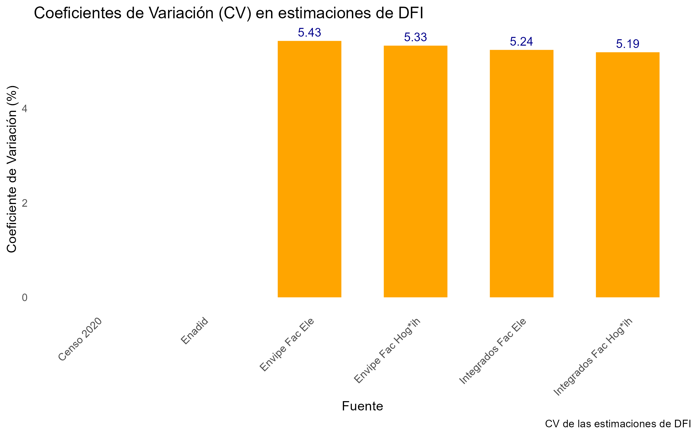
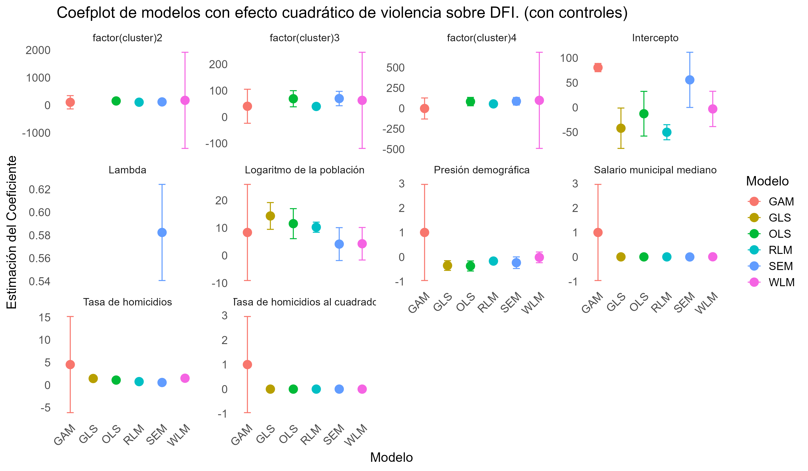
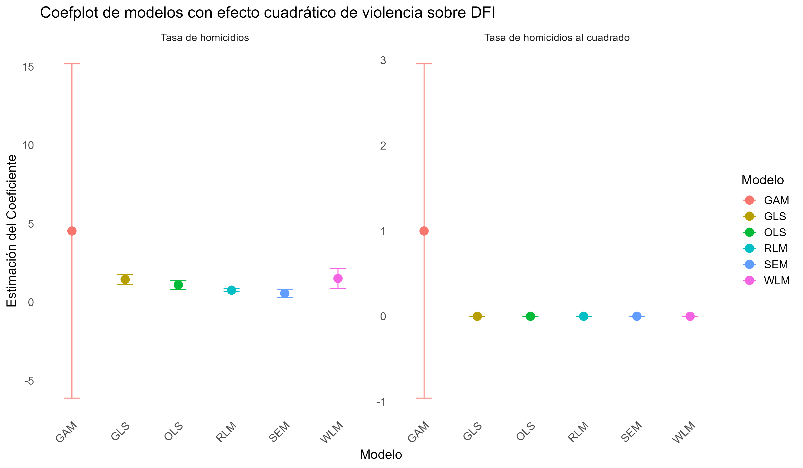
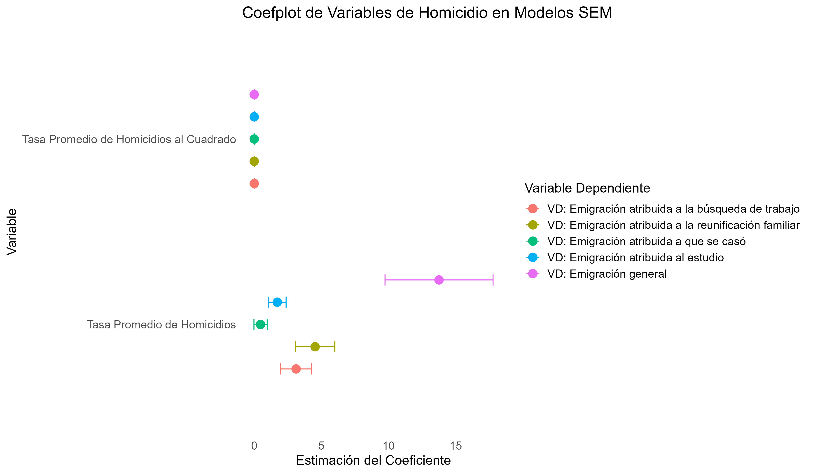
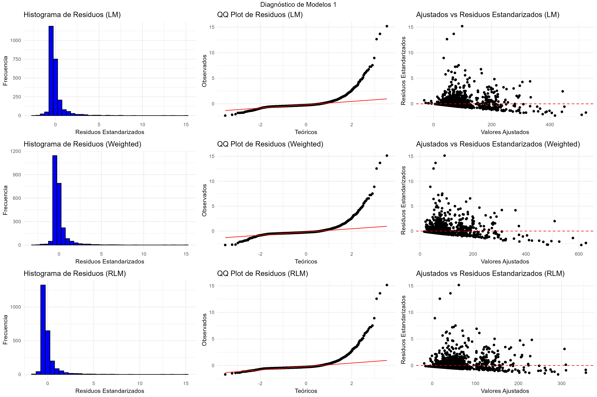
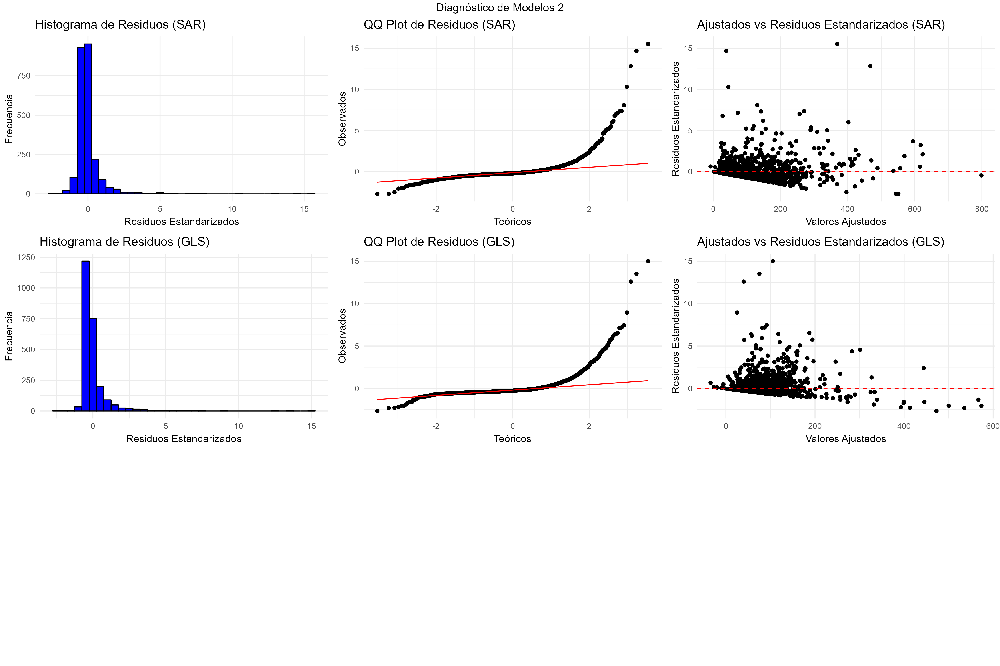
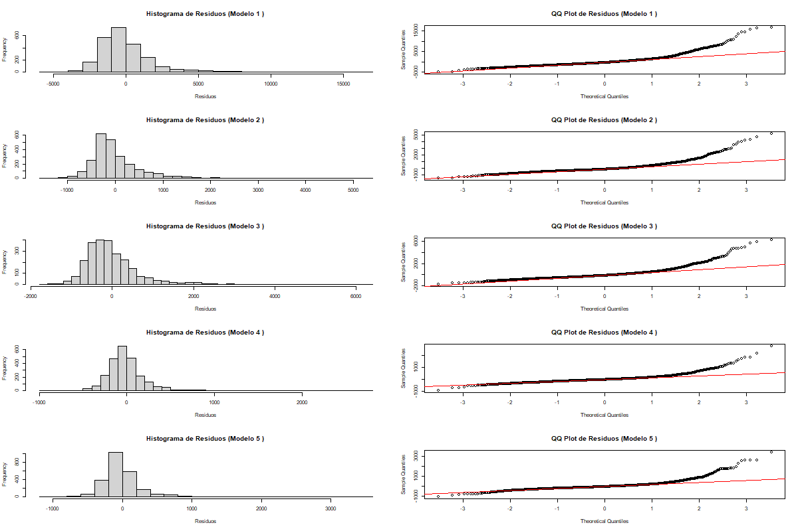

Tras integrar y calibrar los datos de la ENVIPE 2018 y ENADID 2018, utilizando dos factores de expansión base solo para los datos de la ENVIPE 2018, los resultados obtenidos se compararon con las estimaciones basadas en la ENVIPE 2018 y ENADID 2018 sin ningún proceso de integración o calibración, y con los datos del Censo 2020. La cifra de DFI resultante de la integración y calibración asciende a 580,993 personas, casi el doble de la cifra del Censo 2020. La Figura 5 y la Tabla 5 presentan estadísticas descriptivas de las estimaciones de personas en situación de DFI y sus coeficientes de variación (CV) a nivel nacional. Los CV obtenidos a partir de los datos integrados son menores que los de la ENVIPE 2018 y ENADID 2018 por separado, indicando una mayor precisión en las estimaciones al utilizar el método de cálculo del INEGI, que multiplica el factor de expansión para hogares por el número de integrantes del hogar.
Figura 1. “Estimaciones de DFI en México según diversas fuentes integradas y no integradas”,

Figura 2. “Estimaciones de DFI en México según diversas fuentes integradas y no integradas”,

Se encontró una relación no lineal entre la tasa promedio de homicidios y la tasa de personas que declararon haber migrado a causa de la violencia, sugiriendo un punto de inflexión a medida que la tasa aumenta. Esto sugiere que políticas de seguridad enfocadas en reducir los homicidios podrían tener efectos distintos en diferentes contextos.
La influencia positiva consistente de la población sugiere que el tamaño de la comunidad es un factor determinante en los resultados. Por otro lado, la variabilidad en el intercepto indica que factores no observados o específicos de cada modelo pueden jugar un papel importante en la explicación de la variación residual.
La inclusión de Lambda en el modelo SEM resalta la importancia de considerar la estructura espacial de los datos. Esto tiene implicaciones importantes para la interpretación de los resultados y sugiere que modelos que no capturan esta dependencia pueden generar estimaciones sesgadas.
Figura 3. “Resultados del efecto no lineal de la violencia sobre el DFI, a partir de distintos modelos de regresión (con variables de control)”,

| Variable | Modelo.Lineal..OLS. | Modelo.Lineal.Robusto..RLM. | Modelo.Lineal.Ponderado..WLM. | Modelo.de.Errores.Espaciales..SEM. | Mínimos.Cuadrados.Generalizados..GLS. | Modelo.Aditivo.Generalizado..GAM. |
|---|---|---|---|---|---|---|
| (Intercepto) | -12.80041 [23.05144] | -50.22812*** [7.77789] | -3.09726 [18.20422] | 55.66853. [28.46245] | -42.12217* [20.82881] | 80.507*** [4.254] |
| tasa_promedio_hom | 1.09896*** [0.15108] | 0.76124*** [0.05098] | 1.50851*** [0.32374] | 0.56376*** [0.13328] | 1.44722*** [0.1661] | 4.5336*** [5.43214] |
| tasa_prom_cuadrado | -0.00051*** [0.00008] | -0.00035*** [0.00003] | -0.0007*** [0.00016] | -0.00027*** [0.00007] | -0.00068*** [0.00008] | 0.99853** [0.99846] |
| salario_mun_mediano | 0.0034. [0.0019] | 0.00352*** [0.00064] | 0.008*** [0.00179] | 0.00109 [0.00229] | 0.004* [0.00186] | 1* [1] |
| presion_demo | -0.36665*** [0.10476] | -0.16677*** [0.03535] | -0.01534 [0.11152] | -0.23352. [0.12074] | -0.34873*** [0.10103] | 1** [1] |
| ln_pob | 11.52312*** [2.77471] | 10.23642*** [0.93623] | 4.24538 [3.00555] | 4.12048 [3.03994] | 14.31234*** [2.47511] | 8.33468*** [8.88202] |
| factor(cluster)2 | 152.27207** [48.08874] | 106.4918*** [16.22583] | 174.73194 [889.2882] | 117.50333** [43.29778] | NA | 104.381 [123.148] |
| factor(cluster)3 | 68.99103*** [15.56738] | 39.84091*** [5.25266] | 62.91522 [92.7205] | 69.69731*** [13.86591] | NA | 40.533 [32.806] |
| factor(cluster)4 | 82.98724** [26.14819] | 54.70832*** [8.82277] | 98.22413 [300.39051] | 86.99591*** [23.61548] | NA | -1.525 [65.761] |
| lambda | NA | NA | NA | 0.58241*** [0.02134] | NA | NA |
| aic | 31698.83803 | 31828.04858 | 34665.08692 | 31150.77524 | 31682.4174 | 31621.99198 |
| bic | 31756.90092 | 31886.11147 | 34723.14982 | 31214.64442 | 31740.45583 | 31743.15075 |
| bp_stat | 14.21724308 | 14.21724308 | 0.013807732 | 7.1917 | 1.7036 | 14.21724308 |
| bp_pvalue | 0.076275852 | 0.076275852 | 1 | 0.5161 | 0.9888 | 0.076275852 |
| jb_stat | 367775.2295 | 359061.7597 | 355806.6715 | 493931 | 340855.8264 | 376380.7126 |
| jb_pvalue | 0 | 0 | 0 | 0 | 0 | 0 |
| moran_i | NA | NA | NA | -0.010337535 | NA | NA |
| moran_p | NA | NA | NA | 0.799148798 | NA | NA |
| indice de condicion | 21.77 | 21.77 | 21.77 | 21.77 | 21.77 | 21.77 |
| Note: | ||||||
| Errores estándar entre paréntesis. Significancia estadística: p < 0.1, p < 0.05, p < 0.01 |
Figura 4. “Resultados del efecto no lineal de la violencia sobre el DFI, a partir de distintos modelos de regresión”,

Figura 5. “Efecto de la violencia sobre emigraciones atribuidas a causas distintas a la violencia”,

Figura 6. “Diagnóstico visual de modelos no lineales de DFI”,

Figura 7. “Diagnóstico visual de modelos no lineales de DFI (continuación)”,

Figura 8. “Diagnóstico visual de modelos no lineales de emigraciones na atribuidas a la violencia”,

Gracias por haber tomado este taller. Para cualquier duda o comentario acerca de este, del reporte o de la investigación puedes escribir a Daniela Serrano Campos, daniela.serrano@inegi.org.mx